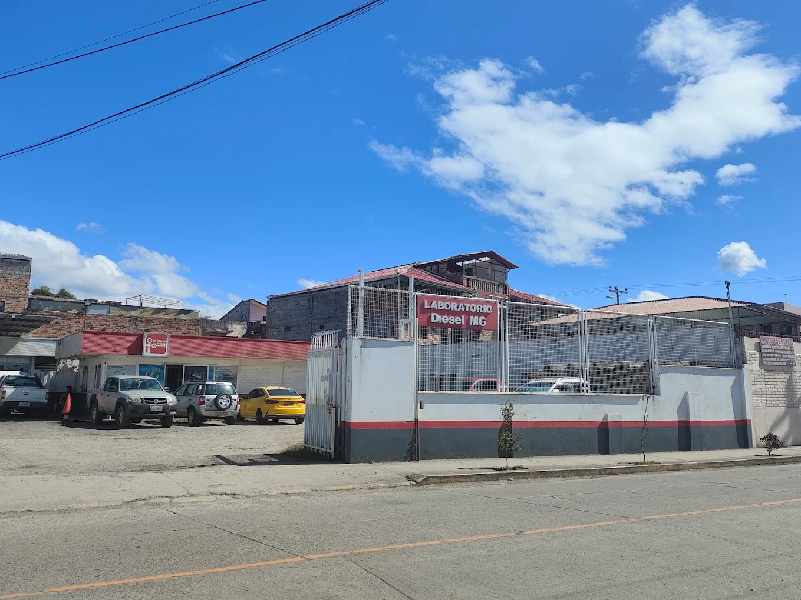
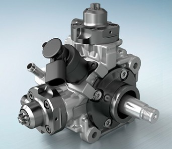
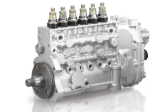
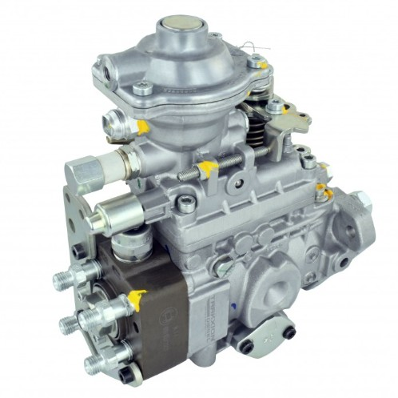
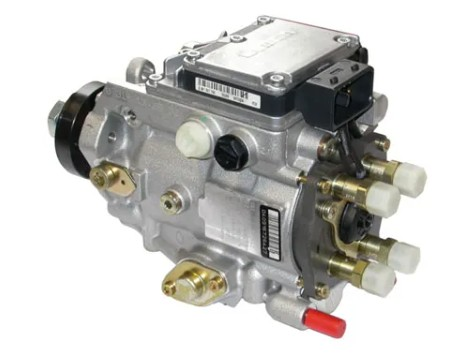
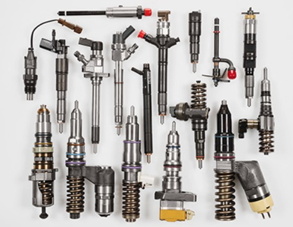
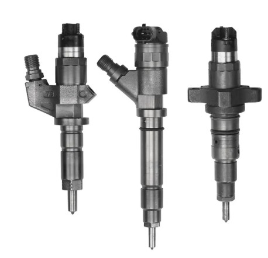
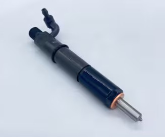

Especializados en inyectores Common Rail, UI, UP y bombas diesel con equipos de precisión de clase mundial. Su vehículo es su herramienta de trabajo — cuídela con los mejores.

En Laboratorio Diesel MG sabemos que su vehículo es su herramienta de trabajo. Por eso, invertimos en el mejor equipo técnico y capacitación constante para detectar cualquier falla con total exactitud.
Contamos con un amplio stock de repuestos originales para garantizar la mayor durabilidad y, si lo prefiere, gestionamos repuestos alternos de alta calidad según su necesidad.
Somos expertos en diagnóstico, calibración y reparación de sistemas diesel — referentes en la industria de vehículos pesados con un equipo altamente capacitado y comprometido.
Equipos certificados y calibrados internacionalmente
10 años formando profesionales especializados
Repuestos originales y trabajo garantizado
Originales y alternos de alta calidad disponibles
Soluciones completas para el sistema de inyección diesel de su vehículo
Utilizamos escáneres y equipos de diagnóstico de última generación para identificar con precisión fallas en el sistema de inyección electrónica. Ahorre tiempo y dinero con diagnósticos exactos desde la primera revisión.
Especialistas en la limpieza, calibración y reparación de inyectores (Mecánicos, Common Rail, UI, UP). Devolvemos el rendimiento original a sus componentes siguiendo estrictos estándares del fabricante.
Contamos con bancos de prueba modernos para la revisión y ajuste de bombas de inyección diesel. Aseguramos la presión y el flujo correctos para un funcionamiento óptimo del motor.
Evaluamos todo el circuito de combustible para detectar contaminantes, fugas o pérdidas de presión que afecten el desempeño de su unidad.
Nuestro personal capacitado le brindará recomendaciones preventivas para prolongar la vida útil de su sistema diesel, respaldados por una década de trayectoria en el mercado.
Inspección y mantenimiento de sistemas turboalimentados y demás componentes relacionados con el circuito de inyección y la puesta a tiempo del motor.
Herramientas de diagnóstico de última generación para garantizar precisión en cada trabajo
Equipo brasilero de prueba de bombas diesel con máxima precisión. Realiza pruebas completas de caudal, presión y atomización de combustible.
Analizador turco de inyectores diesel de última generación. Garantiza la precisión en cada diagnóstico y reparación de inyectores.
Sistema especializado para bombas VP44. Simula condiciones reales de funcionamiento para validar reparaciones con exactitud.
Limpieza ultrasónica de inyectores a gasolina. Elimina depósitos de carbón sin dañar los componentes de precisión.
Buenas prácticas que prolongan la vida de su sistema de inyección
El filtro diesel retiene impurezas y agua. Cámbielo cada 5000 km para evitar daños costosos en los inyectores y pérdida de potencia.
Conducir con el tanque en reserva acumula sedimentos que pueden bloquear la bomba. Mantenga siempre más del 25% de capacidad.
El diésel moderno necesita aditivos que disuelvan depósitos de carbón y mejoren el arranque del motor. Consúltenos cuál usar.
Llene la carcasa del nuevo filtro con aditivo limpiador. Esto purga el aire y limpia los inyectores al arrancar.
Use tanques sellados y limpios para evitar contaminación por agua, hongos y bacterias que se alimentan del diésel.
Cuando llenan los depósitos en la gasolinera, la presión revuelve impurezas en suspensión. Espere un momento si es posible antes de arrancar.
Diagnóstico computarizado y reconstrucción técnica de componentes de alta precisión.

Reacondicionamiento de bombas de alta presión con calibración de válvulas reguladoras y caudal.

Ajuste de gobernadores y sincronización de elementos para motores diesel de gran cilindrada.

Mantenimiento preventivo y correctivo de bombas tipo VE, garantizando una entrega de combustible uniforme.

Reparación especializada de módulos electrónicos y mecánica interna con simulación de banco.

Pruebas de estanqueidad y limpieza profunda para recuperar la atomización óptima del combustible.

Calibración electrónica de inyectores piezoeléctricos y electromagnéticos bajo normas de fabricante.

Regulación de presión de apertura y comprobación del patrón de pulverización.
El tiempo varía de acuerdo al sistema al que pertenece la bomba y los inyectores, pero generalmente el proceso toma entre 1 a 2 días laborables.
Atendemos al público en general. En el caso de flotas vehiculares, se puede considerar un descuento adicional dependiendo del número de unidades.
Contamos con tecnología de punta: Escáner Launch OBD2, Opacímetro Bosch, Bancos de prueba Speedman CRDI, Hartridge para sistemas Cummins, Dayel para CRDI y banco específico para inyectores a gasolina.
Utilizamos repuestos originales. La durabilidad y garantía se asegura mediante el mantenimiento preventivo del cliente en el cambio de filtros y la calidad del suministro de combustible.
Disponemos de un amplio stock de repuestos originales para todo tipo de sistema de inyección Diesel.
Dentro de nuestros horarios establecidos, realizamos todos los trabajos necesarios de forma eficiente para que su vehículo retorne a operación lo antes posible.
Complete el formulario y nos pondremos en contacto en menos de 24 horas
Oficina: 0991231310
Taller: 0988373185
Oficina: 0991231310
Taller: 0988373185
laboratoriodieselmg@hotmail.com
Talleres: Lun a Vie: 8:30 a 13:00 y 14:30 a 18:30
Oficina: Lun a Vie: 8:30 a 13:00 y 13:00 a 18:30
Sábados: 8:30 a 13:00
📞 Teléfono Oficina: 0991231310
📞 Teléfono Taller: 0988373185
📧 Email: laboratoriodieselmg@hotmail.com
📍 Ubicación: Cuenca, Azuay, Ecuador
🕒 Horario de Atención:
• Talleres: Lun a Vie 8:30 a 13:00 y 14:30 a 18:30
• Oficina: Lun a Vie 8:30 a 13:00 y 13:00 a 18:30
• Sábados: 8:30 a 13:00